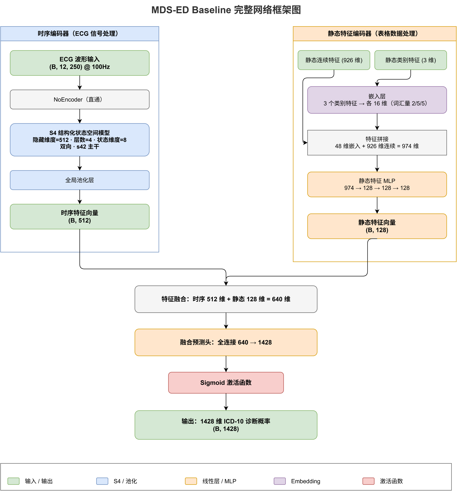
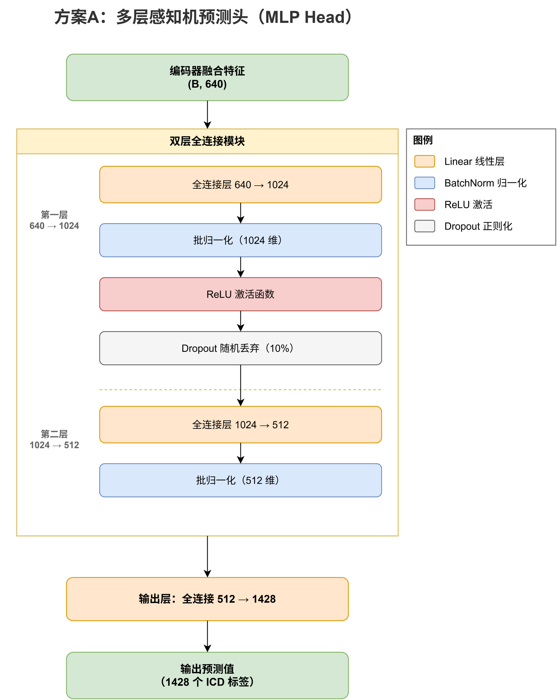
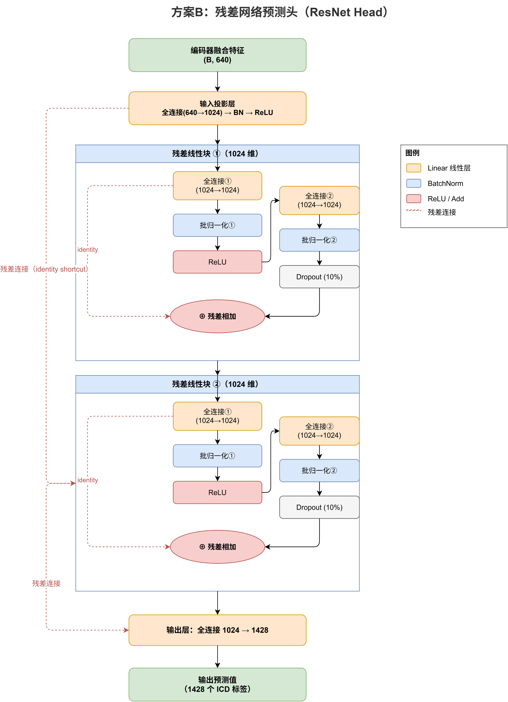
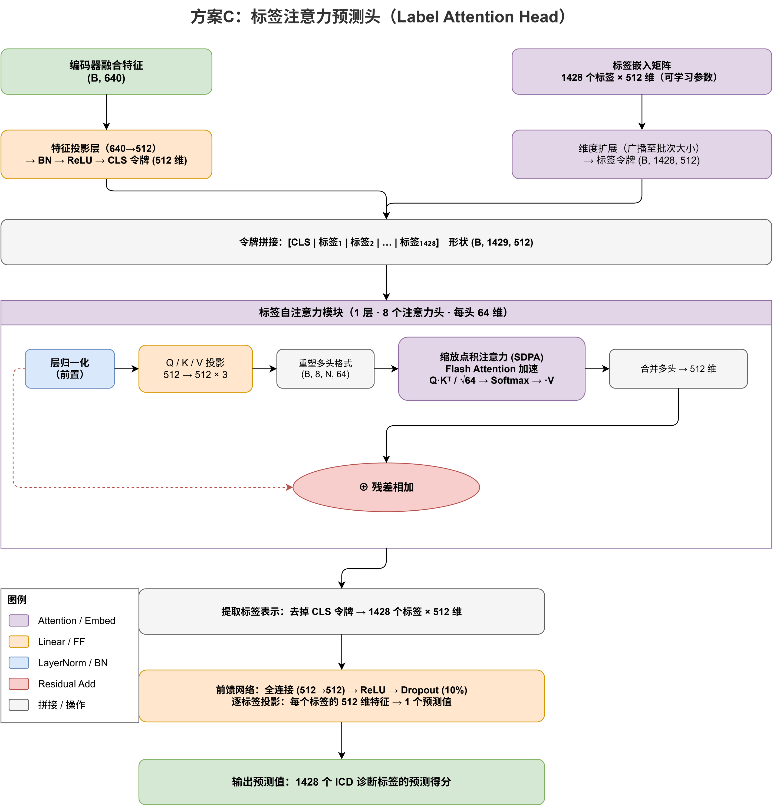
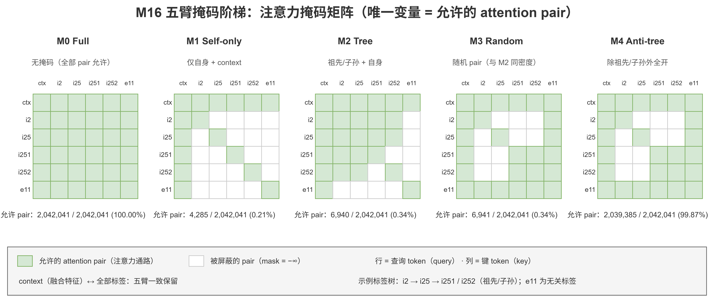
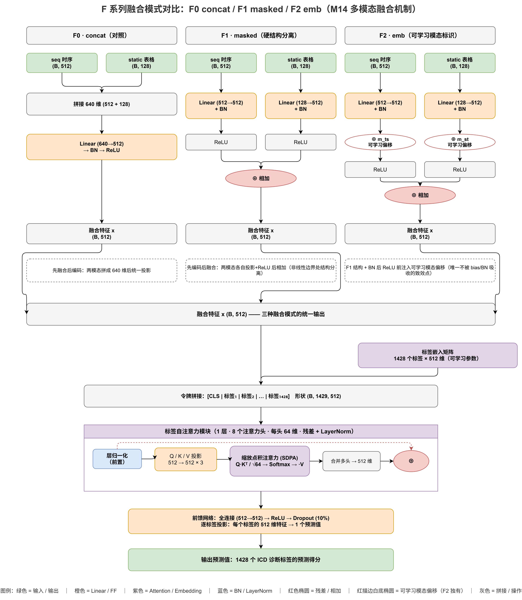
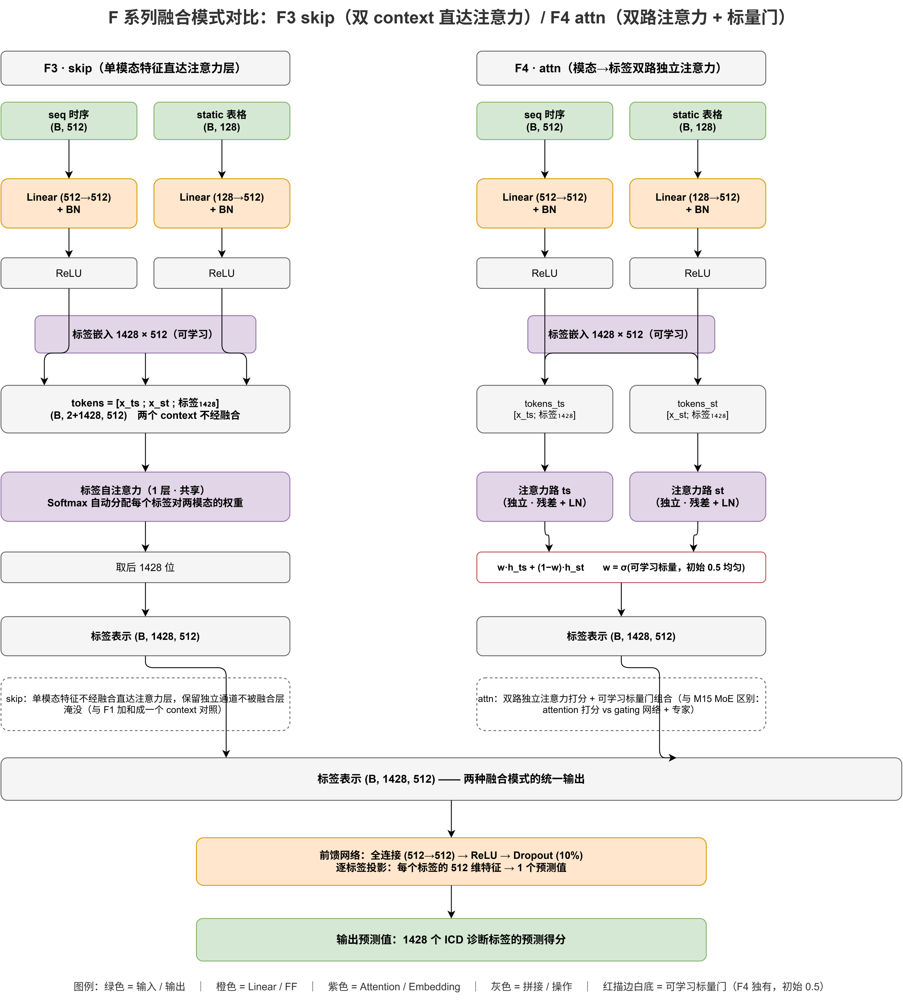

- 换头（LabelAttention）涨 +0.54pp，但加深层数不行——增益来自每个标签的独立容量，不是标签间交互。
- 换骨（ECG-CPC 权重）掉 1.78pp——原 MDS-ED 骨架不可替代，换骨方向关闭。
- 模态消融：只给表格就追平 baseline，只给 ECG 掉 6pp——表格信息是主力，ECG 是补充。
- 融合方式：注意力 skip 底座优于拼接（+0.5pp）；再叠 HBCE 违反率→0.01% 且不掉点。
- 缺失值填充：学习式填充无增益（三套独立实现都 ≈0），但「标记出哪里缺」这个动作本身值 +0.86pp。
- 按疾病章分组训练标签专家：全部变体掉点——分组不如不分组，方向止损。
- 分层训练：课程 × HBCE 拿到家族最高 0.8442 / VR 0.008%；冻结上层 / 加长到 100 轮 / invpref 分配全都无效。
本页定位：总览页瘦身后，与 HBCE（方法1）或二阶段预训练微调（方法2 HLCP/HLUP）主线无关的结构创新/训练技巧类实验集中于此——共 7 个方向：预测头架构（M6）、换骨（M13）、输入模态消融、多模态融合（M14）、tabular 缺失值填充（M20）、按疾病分组的标签专家（M22）、分层训练（M18）。
共同脉络：除 M6（换头 +0.54pp 成功）外，其余方向的结论多为否定/止损（换骨关闭、M22 分组止损）或有界收益（M14 融合 +0.2pp 内、M18 课程×HBCE 需 3 种子）——结构创新的探索已基本收敛，主线聚焦于「HBCE 层级约束」与「HLUP 链式校准」。
| 方向 | 卡片 | 核心结论 |
|---|---|---|
| M6 预测头架构 | 换头 LabelAttention +0.54pp | ✅ 成功（per-label 容量机制，M16 五臂裁决 + Q2 归因） |
| M13 换骨（ECG-CPC） | 权重迁移 −1.78pp | ❌ 关闭（SDS 主线 = 原始 MDS-ED + I2 换头） |
| 输入模态消融 | tabular-only / signal-only | tabular 追平 baseline；signal-only 差 −6pp（模态互补证据） |
| M14 多模态融合 | F0-F5 五形态 | F3 skip 点估计最优（+0.6pp 内，⚠️单次运行） |
| M20 tabular 填充 | 五臂阶梯 + 三套实现 | 填充器效应量 ≈ 0（三套合并）；值信息≫缺失模式；09-15 mask 回注核验通过（改进轮待租卡） |
| M22 分组标签专家 | 三探针 + 路径 B + OTH | ⛔ 彻底关闭（Q1/Q2 双否 + 路径 B 探针否决 + OTH 兜底证伪，2026-09-11） |
| M18 分层训练 | 13 臂全链 | ✅ s1c（课程×HBCE）终态（agg1 全家族最高，⚠️待 3 种子） |
① 核心指标：四组 Head 对比（Step 1: BCE_focal，20 epochs，从头训练）
Takeaway 🎯 LabelAttention 头是唯一过门槛的换头方案（+0.54pp）；MLP +0.28pp 方向对但不足，ResNet 不涨反跌 −0.20pp。
⚠️ 口径（2026-08-14 修正）：本表为 val 集 (agg0) 口径——agg0=val 集 / agg1=test 集；数值不变，仅标签更正。test 侧 [95% CI] 仅 LabelAttention 与 Control 两行有（来源手稿 Table 2「Attention-mask intervention series」的 Full (LA) / Linear head 行，内置 B=1000）；MLP / ResNet 手稿未做区间，故不标。
| Head | Val Macro AUROC (agg0) [95% CI] | Test Macro AUROC (agg1) | Δ val (pp) | Δ test (pp) | 参数量 | 判定 |
|---|---|---|---|---|---|---|
| LabelAttention Head | 0.8319 [0.8278, 0.8354] | 0.8423 [0.8389, 0.8457] | +0.54 | +0.67 | ~2.5M | 🟡 0.5~1pp |
| MLP Head | 0.8293 [0.8256, 0.8328] | 0.8354 | +0.28 | −0.02 | ~2.7M | 🟢 <0.5pp |
| Control (Linear head) | 0.8264 [0.8225, 0.8304] | 0.8356 [0.8323, 0.8388] | 0.00 | 0.00 | 0.92M | baseline |
| ResNet Head | 0.8245 [0.8204, 0.8284] | 0.8316 | −0.20 | −0.40 | ~7.2M | 🔴 下跌 |

🔍 四种 Head 架构示意图（特点与区别）
Takeaway 🎯 四架构沿「容量 × 归纳偏置」两轴展开——LA 是唯一引入 per-label query token 的方案。
四种 head 共享相同的特征提取部分（ECG 波形 → TimeSeriesEncoder(S4) + 静态表格 → StaticEncoder(MLP) → 特征拼接），区别仅在融合特征 → 1428 维 logit 的映射层。按容量（参数量）与归纳偏置（是否引入标签间交互/残差结构）两条轴区分：

① Baseline（Linear Head，0.92M）——融合特征经单层 nn.Linear(512, 1428) 直接映射，无激活函数、无标签间交互。1428 个标签的 logit 是输入特征的独立线性组合，层级关系只能靠权重向量"碰巧"呈现。这是所有换头实验的对照。

② MLP Head（~2.7M）——Linear → BN → ReLU → Dropout → Linear(hidden) → BN → ReLU → Linear(1428)。纯增加非线性层与宽度（hidden 1024→512），给每个标签更大的参数空间，但仍未引入标签间交互。结果 +0.28pp（CI 重叠，方向正确涨幅有限）。

③ ResNet Head（~7.2M）——2 个残差块（Linear→BN→ReLU→Linear→BN→+input→ReLU），identity shortcut 保证"至少不比输入差"的信息流。但 512 维输入 → 1428 维输出的信息瓶颈未改善，7.2M 参数在 20 epoch 下陷入次优解，不涨反跌 −0.20pp。

④ LabelAttention Head（~2.5M）——每个 ICD 标签一个独立可学习 query token（1428+CLS），经 self-attention 与上下文特征交互，实现 per-label 特征路由。注意力交互的主要作用是为不同标签关注特征空间的不同方向（而非标签间传播层级信息，见②消融）。+0.54pp 为四种方案最优。
架构图来源：draw-io-img/{01_baseline_architecture,02_mlp_head,03_resnet_head,04_label_attention_head}/*.png（draw.io 导出）
② 消融分析：LabelAttention 的增益来源
Takeaway 🎯 增益来自 per-label 投影增强、不是层级传播（深度分层 Δ 无梯度、Spearman ρ≈0）。
核心问题：+0.54pp 是因为 (a) label self-attention 传播了 ICD 层级信息，还是 (b) 每个标签的 query token 学到了更丰富的独立特征投影？
| 维度 | 分组 | N | mean Δ (pp) | 改善率 |
|---|---|---|---|---|
| 按深度 | Depth 0 (root) | 450 | +0.43 | 62.0% |
| Depth 1 | 628 | +0.53 | 61.0% | |
| Depth 2 (最深) | 350 | +0.71 | 63.1% | |
| 叶/内部 | 叶子节点 | 861 | +0.49 | — |
| 内部节点 | 567 | +0.61 | — |
表格怎么读：mean Δ = 每标签「LabelAttention vs baseline」per-label AUROC 改善量（pp）按 ICD 层级分组均值——「层级传播」预测深层/内部节点受益更多、「独立投影」预测无深度梯度，此表即裁决判据。
实际数据与假设 (a) 的预测不符：三个深度桶的 Δ 几乎相同（+0.43 / +0.53 / +0.71，最大差距仅 0.28pp），改善率也都在 61~63% 之间——深层标签并未系统性获益更多。叶/内部对比中，内部节点仅比叶子多 0.12pp，效应量太小不足以支撑"层级传播"假说。作为对照，若假设 (a) 成立，预期应看到 Depth 2 桶显著高于 Depth 0 桶（例如 >1pp 的梯度），但数据完全没有这种形态。
Spearman ρ(depth, Δ) = +0.0052 (p = 0.8513) — 这是对上述观察的定量检验：把 1428 个标签的深度（0/1/2）与各自 Δ 做秩相关，ρ 几乎为零且不显著，说明「标签越深改善越大」的趋势在统计上不存在。三个深度的 Δ 直方图几乎同分布（见下图）。


如果 self-attention 确实传播了层级信息，深层标签（有更多祖先可"咨询"）应系统性地受益更多——但 Spearman ρ 几乎为零，数据完全不支持。LabelAttention 的增益本质是：每个 ICD 标签拥有独立的可学习 query token（而非共享的线性投影），通过 attention 为每个标签学到更丰富的输入特征映射。这是 per-label parametrization enrichment，与 ICD 层级结构无关。
③ D1/D2 干预实验：树结构 attention 证伪（08-12 掩码真激活重跑复现）
Takeaway 🎯 树结构 attention 证伪：掩码真激活后仍无增益（+0.09pp）——D3/D4 不执行。
消融分析是相关性证据——为获得因果性证据，执行了两组干预实验：D1 将全连接 self-attention（1429²≈2M 对）限制为仅祖先/子孙/自身（0.4% 非零对），若层级传播假说成立则性能应提升；D2 在 attention score 上叠加基于树距离的可学习偏置（6 个标量参数），软约束层级关系。若两者均无效，则层级假说在因果层面被证伪。08-12 对 D1 完成激活审计 + 掩码真激活重跑复现（原始 08-04 D1 掩码未激活，取证无效，见下方复现说明）。
| Head | Val Macro AUROC (agg0) [95% CI] | Test Macro AUROC (agg1) | micro (val) | Δ val vs LA (pp) | Δ test vs LA (pp) | 判定 |
|---|---|---|---|---|---|---|
| LabelAttention（原始，基准） | 0.8319 [0.8278, 0.8354] | 0.8423 [0.8389, 0.8457] | 0.9196 | 0.00 | 0.00 | — |
| D1: Tree-Masked（08-12 重跑，掩码真激活） | 0.8328 [0.8291, 0.8366] | 0.8419 [0.8386, 0.8452] | 0.9202 | +0.09 | −0.04 | 🟢 持平（CI 完全重叠） |
| D2: Ancestor-Bias | 0.8318 [0.8280, 0.8356] | 0.8405 | 0.9198 | −0.003 | −0.18 | 🟢 持平（CI 完全重叠） |
| Control (Linear head，参照) | 0.8264 [0.8225, 0.8304] | — | — | — | — | baseline |
test 侧 [95% CI] 仅 LabelAttention 与 D1 两行有（来源手稿 Table 2 的 Full (LA) / Tree 行，内置 B=1000）；D2（Ancestor-Bias 软偏置）与 Control 行手稿未做区间/未评估，故不标。

完整 per-label 确认（08-12 重跑数据）：D1 改善 355 / 恶化 303 / 持平 770 个标签（mean Δ +0.09pp），Spearman ρ(depth, Δ)=+0.0036 (p=0.8999)；按深度分层 Depth0 +0.08pp (n=450) / Depth1 +0.17pp (n=628) / Depth2 −0.03pp (n=350)——无系统性深度相关，per-label 与层级两个层面都确认树掩码无系统增益。
| 变体 | 改善 | 恶化 | 持平 | mean Δ (pp) | Spearman ρ(depth, Δ) |
|---|---|---|---|---|---|
| D1 Tree-Masked（重跑） | 355 | 303 | 770 | +0.09 | +0.0036 (p=0.8999) |
| D2 Ancestor-Bias | 342 | 334 | 752 | −0.00 | +0.0233 (p=0.3786) |
VR 层级一致性（重跑数据）：LA soft=13.44% / hard=0.0023%；D1 soft=12.81%（−0.63pp）/ hard=0.0017%；D2 soft=12.17%（−1.26pp）——树掩码略降违反率（attention 砍到祖先-后代 pair 后输出更贴合层级），但量级微小，不影响不涨点的核心结论。

④ n_layers 扫描（2026-08-13）：加深注意力层数不涨点，n_layers=1 最优
Takeaway 🎯 n_layers = 1 最优；l2/l3 噪声内持平、l4/l5 崩塌 −13~−15pp（初期即崩 + 表征坍缩）。
动机：§8.5 消融确认增益来自 per-label 特征投影增强——验证"更深 attention（增加 n_layers）能否增强该机制进一步涨点"。固定纯 BCE_focal，仅 head.n_layers = 1/2/3/4/5 变化（其余超参不变）。
| n_layers | val macro (agg0) [95% CI] | test macro (agg1) | Δ val vs l1 (pp) | Δ val vs control (pp) | Δ test vs control (pp) | val micro |
|---|---|---|---|---|---|---|
| 1（默认） | 0.8324 [0.8286, 0.8357] | 0.8411 | — | +0.60 | +0.55 | 0.9200 |
| 2 | 0.8305 [0.8265, 0.8342] | 0.8411 | −0.19 | +0.41 | +0.55 | 0.9191 |
| 3 | 0.8331 [0.8296, 0.8368] | 0.8397 | +0.07 | +0.67 | +0.41 | 0.9194 |
| 4 | 0.6956 [0.6902, 0.7083] | 0.6992 | −12.90 | −12.30 | −12.86 | 0.8703 |
| 5 | 0.6765 [0.6708, 0.6823] | 0.6772 | −14.81 | −14.21 | −15.06 | 0.8329 |


批次一致性核验：l1 = 0.8324 与 §8.2 M6-C（0.8319）CI 完全重叠 ✓；scores pkl 与日志解析互证 diff ≤ 1e-6 ✓。浅层无增益：l2/l3 的 CI 与 l1 完全重叠，差异在训练噪声量级——该 head 的容量增益在单层已饱和（与 MLP 扩层经验一致）。


增加层数不能提升性能：浅层（2-3 层）噪声内持平，深层（4-5 层）急剧崩塌（−13~−15pp，比 control 还差 12~14pp）。该结果界定了"容量增强"路线的收益边界（+0.5~0.6pp，容量≠深度），可作为论文讨论章节素材。per-label 投影增强主线的其余选项（调大
hidden_dim、per-label FFN）仍待探索。
⑤ M16 五臂掩码阶梯：干预级裁决（2026-08-28）——per-label 容量成立，交互零贡献
Takeaway 🎯 per-label 容量成立（H1）、标签间交互零贡献（H2/H3/H4 全排除）——五臂单变量干预级证据。
背景：② 消融（ρ≈0）是观测证据、③ D1/D2 的对照不构成严格控制变量（见上方修正框）——为拿到干预级证据，M16 设计了五臂 attention 掩码阶梯（单变量严格对照）：M0 无掩码 / M1 只留自身+context（零标签间交互）/ M2 祖先-子孙（树）/ M3 随机 pair（与 M2 同密度，控制稀疏度变量）/ M4 全部除祖先-子孙（跨树）。同机 5090、评估 mode=none 同口径。
| 臂 | 掩码 | val (agg0) [95% CI] | test (agg1) [95% CI] | Δ val vs M0 | Δ test vs M0 | soft VR (test) |
|---|---|---|---|---|---|---|
| M0 Full (LA) | 无掩码（所有 pair） | 0.8319 [0.8278, 0.8354] | 0.8423 | — | — | 13.44% |
| M1 Self-only（零交互） | 只允许自身 + context | 0.8333 [0.8296, 0.8372] | 0.8433 [0.8400, 0.8470] | +0.14pp | +0.10pp | 12.89% |
| M2 Tree | 祖先/子孙 + 自身（D1） | 0.8328 [0.8291, 0.8366] | 0.8419 | +0.09pp | −0.04pp | 12.81% |
| M3 Random | 随机 pair（密度同 Tree） | 0.8336 [0.8296, 0.8372] | 0.8432 [0.8399, 0.8465] | +0.17pp | +0.09pp | 14.26% |
| M4 Anti-tree | 全部 pair 除祖先/子孙 | 0.8326 [0.8290, 0.8364] | 0.8407 [0.8373, 0.8442] | +0.07pp | −0.16pp | 12.67% |
test 排名：M1 (0.8433) > M3 (0.8432) > M0 (0.8423) > M2 (0.8419) > M4 (0.8407)——全部高于 baseline 0.8356，CI 均重叠（差异在噪声量级），但方向信息明确。

⑥ M16 Q2 疾病归因：LA 增益让哪些疾病受益（2026-09-02，M16 §3.3）
Takeaway 🎯 增益全域弥漫、低频难标签受益最大（ρ=−0.190）、急性组弱（+0.08 vs 慢性 +0.58）——直接喂论文 Discussion。
动机：Q1 裁决后追问"哪些疾病受益"——对 1428 标签标注深度/频率/急慢性/章节做四假设检验；整体 mean Δ=+0.54pp、888 改善/540 恶化、Δ 范围 [−16.80,+13.85]pp。
Top-20 改善标签（Δ ≥ 8.0pp，多为慢性/表格优势类）：g510 +13.85（G 章）/ g51 +12.97 / g891 +12.44 / i80 +11.94（I 章）/ k81 +11.40（K 章）/ z8585 +11.16 / n289 +11.15 / i519 +10.76 / b9561 +10.72 / b954 +10.29 / m6283 +10.22 / z77 +9.36 / k2980 +9.33 / k298 +9.28 / z803 +8.66 / k529 +8.33 / j329 +8.31 / m100 +8.30 / z9641 +8.05（急性）/ z8505 +8.02。 Bottom-20 恶化标签（Δ ≤ −7.6pp）：g70 −16.80 / g44 −16.12 / s80 −15.00 / g894 −10.51 / s30 −10.06 / d59 −9.19 / t78 −8.96 / r1012 −8.69 / m940 −8.66 / m2556 −8.65 / e89 −8.37 / h90 −8.34 / t88 −8.30 / z8504 −8.25 / r1032 −8.17 / v180 −8.07 / g935 −8.04 / f13 −7.75 / i517 −7.65 / z88 −7.56。
| 假设 | 检验 | 结果 | 结论 |
|---|---|---|---|
| H-A 章节集中性 | 各章 mean Δ | 全部章节 ∈ [0.29, 2.12]pp 均 > 0（无整体负章节）；最高 B 1.86 / L 0.97 / N 0.92 / V 0.90 / Z 0.69 / J 0.66 / K 0.65 / M 0.64；最低 T 0.29 / F 0.44 / S 0.46（仍正） | ❌ 不集中在某个器官系统——提升是全书（24 章）分布的，各章节皆受益 |
| H-B 急/慢性 | 三分组 mean Δ | 持平组 +0.63 / 慢性组 +0.58 / 急性组仅 +0.08 | ⚠️ 急性组（ECG 优势标签）受益明显更弱——LA 对 ECG 原本擅长的急性事件增益最小 |
| H-C 频率/难易度 | Spearman ρ(baseline_auroc, Δ) | −0.190 (p < 0.001) | ✅ 显著负相关——越难（低频/低 AUROC）的标签受益越大，验证"per-label query 为低频标签提供额外表达空间" |
| 深度（沿用 M6 §8.5） | Spearman ρ(depth, Δ) | +0.0052 (p=0.84) | ＝ 与 M6 §8.5 完全一致——判别增益与层级深度无关（再次确认） |
"越难受益越大"的分桶证据（分桶仅为说明工具，结论以整条 ρ = −0.190 为准）：按 baseline（线性头）per-label AUROC 分五桶，Δ 呈强单调递减——
| baseline 难度桶 | 标签数 | mean Δ (pp) |
|---|---|---|
| [0, 0.5) 最难（≈瞎猜） | 2 | +12.04 |
| [0.5, 0.6) | 24 | +3.89 |
| [0.6, 0.7) | 125 | +2.09 |
| [0.7, 0.8) | 399 | +0.51 |
| [0.8, 1] 最容易 | 878 | +0.22 |
最难桶仅 2 个标签（`g510` +13.85pp / `m6283` +10.22pp），最陡提升由 2–23 个标签驱动、易受噪声影响；真正的统计证据是整条单调递减关系（ρ = −0.190, p < 0.001, n=1428）。机制呼应 Q1 容量解释：高频易标签的共享线性投影已近饱和、LA 增量空间小；低频难标签的共享投影根本不够用、独立参数空间边际价值最大。
⑦ 论文叙事修正
Takeaway 🎯 论文叙事从「标签间信息传播」修正为「per-label parametrization」——贡献归属从层级约束改为预测头容量。
| 修改前（错误假设） | 修改后 | |
|---|---|---|
| 机制解释 | LabelAttention 让标签间互相"看到"，模型自己发现 ICD 层级结构 | LabelAttention 为每个标签提供独立的 query token，通过 attention 为每个标签学习更丰富的输入特征投影 |
| 贡献归属 | 属于"层级约束"方向 | 属于"预测头容量"方向——与 MLP/ResNet 同类但更有效 |
| 论文亮点 | 标签间信息传播 | per-label parametrization via learned query tokens——最小参数量增长（~2.5M）获最大性能提升（+0.54pp） |
| 验证方式 | 仅消融分析（相关性） | 观测消融（ρ≈0）+ M16 五臂掩码阶梯（单变量严格对照，干预级）——D1/D2 因对照不严格降级为旁证（树先验只改一致性，见 ⑤ 节） |
⑧ 后续行动
Takeaway 🎯 深度维度已闭环（n_layers 无效）；主线转向宽度维度（hidden_dim / per-label FFN）。
| 优先级 | 任务 | 说明 |
|---|---|---|
| ✅ 已闭环 | 已完成（08-13）：n_layers=1 即最优——l2/l3 噪声内持平，l4/l5 崩塌 −13~−15pp（初期即崩 + 表征坍缩）。深度维度无效，见 §10 | |
| ⭐ 主线 | hidden_dim / per-label FFN | 消融指向的真正增益来源——per-label 投影的宽度维度（而非深度）：调大 hidden_dim、为每个标签引入独立 FFN |
| M2 叠加 | LabelAttention + Linear Prob | 优先级提高——per-label 投影的半监督初始化（S0 冻结→S1 解冻→S2 全参数）可能进一步释放容量增益 |
| ✅ M16 Q1/Q3 | 已完成（2026-08-28）——H1 容量成立，H2/H3/H4 排除（见 ⑤ 节） | |
| Phase 2 | LabelAttention + HBCE | 验证容量增强与层级约束的独立叠加效果——M6 与 HBCE/HMLC 是两个正交贡献 |
| ✅ M16 Q2 | 已完成（09-02，见 ⑥ 节）——各章节均正（H-A ❌ 不集中）、急性组弱（+0.08 vs 慢性 +0.58）、低频难标签受益最大（ρ=−0.19, p<0.001）——三条带数据的分层证据直接喂论文 Discussion，避免"只帮心血管"误导叙事 | |
| Label embedding | parent-child cosine similarity 分析 | 提取 label_embeddings（1428×512），计算 parent-child cosine similarity vs random——最终确认 embedding 是否隐式习得层级结构 |
| 论文写作 | 按 M16 新叙事写 LA 章节 | "1428 个独立分类器的共享 backbone 参数化，attention 可摘除"（Q1）+ "全域分布/低频难标签受益最大/急性组弱"（Q2）——最小机制图 = M0 判别不优于 M1；树先验只改一致性 |
① 三方案换骨总览（A/B/C，Phase A 收口 2026-08-20）
Takeaway 🎯 ECG-CPC 换骨三方案全部关闭（A −1.29pp / B −1.78pp / C=baseline）——权重域失配（240Hz→100Hz）。
⚠️ 口径约定：val (agg0) 为诊断口径、test (agg1) 并列给出；Δ 单位 pp；baseline = 原始 MDS-ED 0.8257 (agg0) / 0.8342 (agg1)。
| 方案 | 配置 | val (agg0) [95% CI] | test (agg1) | Δ vs baseline | 判定 |
|---|---|---|---|---|---|
| C | baseline（原始 MDS-ED） | 0.8257 [0.8216, 0.8295] | 0.8342 | — | 基准 |
| A | 全量权重 + causal（因果 S4） | 0.8128 [0.8087, 0.8169] | 0.8235 | −1.29 | 🔴 关闭 |
| B | encoder 权重 + bidirectional（lr=1e-3） | 0.8079 [0.8034, 0.8120] | 0.8137 | −1.78 | 🔴 关闭 |
| A 对照 | 随机 + causal（无权重） | 0.8259 [0.8219, 0.8300] | 0.8358 | +0.03 | 追平（噪声内） |
② 归因诊断 4 实验（Phase 2，2026-08-19 裁决）
Takeaway 🎯 4 个归因实验钉死根因：随机初始化追平 baseline（−0.01pp）且反超权重版——结构失配是主因、BN stats 非主因。
| 实验 | val (agg0) [95% CI] | test (agg1) | 关键对比 |
|---|---|---|---|
| m13-diag-rand（随机初始化） | 0.8256 [0.8213, 0.8295] | 0.8350 | 追平 baseline（Δ=−0.01pp）；反超权重版 +1.77pp |
| m13-diag-bnreset（权重+BN 重置） | 0.8065 [0.8026, 0.8104] | 0.8126 | ≈权重版（−0.14pp）→ BN stats 非主因 |
| m13-diag-stride1（随机+无下采样） | 0.8268 [0.8230, 0.8305] | 0.8368 | 略超 baseline +0.11pp（下采样代价仅 −0.13pp） |
| m13-lr-3e-3 | 0.8113 [0.8073, 0.8154] | 0.8190 | vs 1e-3 权重版 +0.34pp（lr 余量很小） |
③ 后续行动
Takeaway 🎯 主线 = 原骨架 + 换头（I2 复现）；stride=1 随机版 0.8268（+0.11pp）待 3 种子确认。
| 优先级 | 任务 | 说明 |
|---|---|---|
| ✅ 已闭环 | A −1.29pp / B −1.78pp / C=baseline 全部关闭——权重域失配（240Hz→100Hz），勿再碰换骨 | |
| ⭐ 主线 | I2 换头复现 | NoEncoder + LabelAttention 同机复现对齐 0.8319（M6 +0.54pp） |
| baseline 候选 | stride=1 随机版多种子确认 | 0.8268（+0.11pp）需 3 种子确认是否超噪声，通过则作 baseline 微改进 |
| 基线修正 | baseline early stopping / EMA | baseline argmax@ep8 后回撤 −0.54pp（训过状态）→ 基线可能上修 0.3-0.5pp，抬高所有 M 系列对比基准 |
| 模态消融 | 三模态消融第三臂（signal-only） | tabular-only ep100 已追平 multimodal（0.8257）；等 signal-only 三角定位 ECG 边际贡献 |
head=none + static=mlp 自动建 184K 线性头）。
① 三模态消融全景（ep100，双口径含 95% CI）
Takeaway 🎯 tabular-only 仅 344K 参数就追平 multimodal 3.2M；signal-only 掉 5.9pp 且 ep10 即饱和——表格是主承载。
⚠️ 口径约定：agg0 = val split 宏平均（主诊断口径）、agg1 = test split；Δ 单位 pp。CI 已逐位对过日志 test_auroc_macro_agg1_high/low 行核验。
| 档 | val (agg0) [95% CI] | test (agg1) [95% CI] | 参数量 | best ep |
|---|---|---|---|---|
| signal-only（只 ECG） | 0.76639 [0.76214, 0.77054] | 0.77270 [0.76864, 0.77674] | 2.9M | ep10 |
| tabular-only（只表格） | 0.82570 [0.82153, 0.82977] | 0.83293 [0.82925, 0.83652] | 344K | ep61 |
| multimodal（baseline） | 0.82568 [0.82155, 0.82951] | 0.83420 [0.83099, 0.83739] | 3.2M | — |
CI 判读：signal-only 与另两档在双口径上 CI 均不重叠（统计显著，−5.9pp）；tabular-only 与 multimodal 双口径 CI 高度重合（不可分辨，Δ=+0.00002）。tabular ep50→ep100：0.82429→0.82570（+0.0014，延长训练有真实增益；best@ep61 后 39 ep 无刷新 = 平台确认）。
② 核心发现：融合是双刃剑
Takeaway 🎯 ECG 的独特信息只在 144/1428 标签（I 类心血管优势）——互补信息存在，但没能变成整体涨点。
- 表格是主承载：tabular-only 仅 344K 参数（vs multimodal 3.2M）就追平 multimodal（+0.00002）——1428 疾病的宏观 AUROC 几乎全部由表格特征决定。
- ECG 单独弱且快饱和：signal-only 2.9M 参数仅 0.76639（−5.9pp），best@ep10 之后 89 ep 无刷新——ECG 只覆盖少数标签的信息，且收敛极快。
- ECG 独特信息 = 心血管类：144/1428 标签上 ECG 优于表格（Δ>0.02），ICD I 类 55 个主导（I45 右束支传导阻滞、I44.7 左束支、I82.4Z 下肢深静脉血栓、Z45.02 AICD、Z95.81 起搏器）——与 tabular-only 分析中 ECG 缺失亏损榜（急性/心血管/神经类）双向印证。
- 融合双刃剑（核心机制）：ECG 优势标签上 baseline≈signal（0.8469 vs 0.8491，融合成功吸收 ECG，比 tabular 高 +5.7pp）；但表格优势标签（1035 个）上 baseline 比 tabular −1.2pp（被 ECG 分支拖累）——两类效应抵消 → 整体≈tabular。瓶颈在融合机制，不是数据。


③ 未来方向：按诊断类别模态路由
Takeaway 🎯 方向 = 按诊断类别做模态路由——让心血管类标签更多消费 ECG 信息。
| 优先级 | 任务 | 说明 |
|---|---|---|
| ⭐ 主线 | 模态路由实验（最高价值，未开工） | 心血管类标签强制/加权走 ECG 分支，其余走表格分支——理论上可同时保住两类优势，超越所有单模态。三条路径：(a) concat 权重 per-label 类别加权 (b) 双分支独立预测 + 类别路由门控 (c) 先按 ICD 类别分组量化再定粒度（当前 lean：b 最贴合双刃剑机制） |
| 量化 | 按 ICD 类别分组重算三档宏平均 | 比 Δ>0.02 粗分割更严谨，确认心血管 vs 消化/代谢的真实贡献差 |
| 训练策略 | ECG 分支短训 + 表格长训 | signal-only ep10 即饱和 → 路由实验中 ECG 分支 ~20ep 足够，表格分支照常 100ep |
| 决策参考 | 纯表格模型替代可行性 | 若目标病种不含心血管急症 → 纯表格模型（344K）可替代多模态，参数降 9 倍 |
① 六实验核心指标（val agg0 / test agg1 双口径含 95% CI）
Takeaway 🎯 F3 skip 点估计最优（+0.60pp）但全部单次运行——F0-F5 差异都在种子方差（±2pp）内。
| 实验 | val agg0 [95% CI] | test agg1 [95% CI] | vs F0 Δ (agg0 / agg1) | 标签级配对 Δ (95% CI) |
|---|---|---|---|---|
| F0 concat（对照） | 0.83159 [0.82806, 0.83514] | 0.84065 [0.83732, 0.84394] | — | — |
| F1 masked（硬结构分离） | 0.83047 [0.82672, 0.83423] | 0.84017 [0.83676, 0.84332] | −0.11pp / −0.05pp | −0.00113 [−0.00232, −0.00006] 排除 0 |
| F2 emb（可学习标识） | 0.82941 [0.82546, 0.83297] | 0.83980 [0.83613, 0.84309] | −0.22pp / −0.09pp | −0.00219 [−0.00331, −0.00109] 排除 0 |
| F3 skip（双 context 直达） | 0.83283 [0.82901, 0.83634] | 0.84164 [0.83826, 0.84504] | +0.12pp / +0.10pp | +0.00124 [+0.00000, +0.00240] 排除 0 |
| F4 attn（双路独立 + 标量门） | 0.83160 [0.82767, 0.83500] | 0.84169 [0.83824, 0.84498] | +0.00pp / +0.10pp | +0.00001 [−0.00140, +0.00141] |
| F5 decoupled（解耦交叉注意力） | 0.83257 [0.82921, 0.83621] | 0.84028 [0.83693, 0.84328] | +0.10pp / −0.04pp | +0.00098 [−0.00009, +0.00209] |


架构示意图（draw.io）：F0 先融合后编码（两模态拼接 640 维统一投影）；F1 硬结构分离（各自 Linear→BN→ReLU 后加和，致效点在非线性边界）；F2 在 F1 上加每模态可学习偏移（BN 后 ReLU 前注入）。F3/F4 共享 F1 的双分支投影骨架，差异在注意力层组织方式——F3 双 context token 直达共享 softmax，F4 双路独立注意力 + 可学习标量门。


② 层级违反率（VR）：AUROC 换层级一致性的权衡
Takeaway 🎯 F3/F4 的 AUROC 最高但 VR 也最高（+0.77/+0.68pp）——「注意力灵活分配」的代价；VR 与 AUROC 是两条独立轴。
| 实验 | VR% | vs F0 |
|---|---|---|
| F0（concat） | 14.55% | — |
| F1（masked） | 14.87% | +0.32pp |
| F2（emb） | 14.60% | +0.05pp |
| F3（skip） | 15.32% | +0.77pp |
| F4（attn） | 15.23% | +0.68pp |
| F5（decoupled） | 15.01% | +0.46pp |

③ 后续行动
Takeaway 🎯 最高优先 = F0-F5 多种子复现；方向设计 = VR × 层级结构结合（F6）。
| 优先级 | 任务 | 说明 |
|---|---|---|
| ⭐ 最高优先 | F0-F5 多种子复现（3 种子） | 所有"单次运行"结论转正的前提——种子方差 ±2pp 量级 > 各变体差异（§警示框）；F3/F0 优先（F3 点估计最高的转正关键）；脚本需加 PL_GLOBAL_SEED env 注入 |
| 方向设计 | VR × 层级结构结合（可作 F6） | F3/F4 × (HBCE / roll_up) 组合——注意力机制（增 AUROC）× 层级结构先验（降 VR）双赢设计；与 M15 A2 独立（F6 是融合层改造，M15 是专家塔架构） |
| 交叉验证 | F5 交叉注意力权重探针 | 初始平均 [0.495, 0.505] 均匀；若复现后偏好仍≈常数 → M15 标签级 MoE 预期收益下调 |
④ F6 收官：注意力底座 × 层级结构三方法裁决（2026-09-02）
Takeaway 🎯 HBCE-squared（skip λ∈{5,10}）以「AUROC 不降 + VR≈0 + 成本 1/4」战胜 HMLC 三阶段链——层级一致性主推。
问题：F3/F4 的 VR 权衡（AUROC 最高但 VR 也最高）指向两条路线——HBCE 惩罚（单阶段，层级 loss 叠加注意力底座）vs HMLC 链式法则（S0→S1→S2 三阶段）。F6 以同机对照裁决谁该成为主线。squared 6 变体 + HMLC 2 臂全部在 服务器A（RTX 5090）同机完成，直接可比（linear 4 变体在 服务器B PRO 6000，带 ⚠️跨机）。
| 路线 | 配置 | agg0 (val) | Δagg0 (pp) | agg1 (test) | Δagg1 (pp) | VR test% |
|---|---|---|---|---|---|---|
| HBCE-squared（单阶段 ~10h） | skip λ10（主推） | 0.83411 | +0.25 | 0.84261 | +0.20 | 0.0109% |
| skip λ5（agg1 最优） | 0.83400 | +0.24 | 0.84284 | +0.22 | 0.0153% | |
| F0 参照 | concat + LA（无层级约束） | 0.83159 | — | 0.84065 | — | 14.55% |

① 五臂裁决表（test agg1 为主指标，bootstrap CI 1000 次）
Takeaway 🎯 值信息 ≫ 缺失模式（P1A−P2 = 4.76pp）——tabular 威力主要来自观测值本身。
| 臂 | 配置 | test agg1 [95% CI] | Δagg1 (pp) | test agg0 | Δagg0 (pp) |
|---|---|---|---|---|---|
| P1A 锚点 | 值 + 缺失指示位（历史基线口径） | 0.8349 [0.8315, 0.8379] | — | 0.8264 | — |
| P1B mask→cat | mask 改 categorical embedding | 0.8332 [0.8298, 0.8367] | −0.17 | 0.8263 | −0.01 |
| P2 mask-only | 只缺失模式，抹掉观测值 | 0.7874 [0.7830, 0.7914] | −4.76 | 0.7818 | −4.45 |
| P3 MLP 填充 | 学习式填充（MLP 核） | 0.8318 [0.8285, 0.8350] | −0.31 | 0.8238 | −0.26 |
| P4 注意力填充 | 学习式填充（attention 核，YJY 构想） | 0.8324 [0.8289, 0.8357] | −0.25 | 0.8250 | −0.14 |
锚点复现：P1A 与历史 with_nan_mask 基线（0.8264/0.8356，不同机）几乎逐位一致——同机锚点可信。
② 三套独立实现合并判读（2026-09-15 更新：俞复现版并入）
Takeaway 🎯 填充器效应量 ≈ 0（师姐 +0.27 / 我们 −0.3 / 俞复现 ≈0）；唯一三源钉死的是「缺失指示 +0.86pp」。
| 阶梯位置 | 师姐代码库（ECG+tabular） | 本仓库 S4 底座 | 俞独立复现版 | 合并判读 |
|---|---|---|---|---|
| P0 → P1（加缺失指示位） | +0.85pp（0.8232→0.8317） | +0.86pp（历史 +0.87） | — | ✅ 三源稳定复现，全方向最可靠效应 |
| P1 → 学习式填充 | +0.27pp（0.8317→0.8344，无 CI） | −0.31/−0.25pp（P3/P4） | ≈ 0（几乎无提升） 方法学同向证据† | ⚠️ 三套合并效应量 ≈ 0 |
| 网络结构差异 | attention 核 | attention vs MLP 仅 +0.06pp（同机实测） | — | ✅ 结构差异已排除——不是"换核"能解释的 |
| ECG 参与填充 | +0.02pp（无增益） | 未做（路线已关闭） | — | ✅ 三源一致 |
| 值信息 vs 缺失模式 | 未做 mask-only 消融 | P2：−4.76pp（值主导） | — | 本仓库独有证据 |
imputer.py :214-218 有 cat([z_diag, m_real])——那是我们 M20 的实现（已三点取证），不是他实验的代码。引用时勿把"他看到的我们的代码"当成"他实验的配置证据"。
③ 09-15 校验：⓪ 号 Mask 回注核验已通过（M20 无需重跑）
Takeaway 🎯 ⓪ 号 mask 回注核验通过（三点取证 + 参数量对账）——本仓库无此问题、无需重跑。
hparams keep_mask_in_diag: True；② inner 首层 Linear(974 = 48 + 926)（含 926 维 mask 拼入）；③ 前向实测输入宽度 926；④ 参数量 974,799 与服务器日志逐位一致。⚠️ 归属澄清（别混为一谈）：同学A的 mask 质疑对象是俞锦越按 PDF 独立复现的实现，不是本仓库
imputer.py——本仓库版本无此问题、无需重跑。
④ 下一步梯队（改进轮，需租卡/开机——服务器B 已关机）
Takeaway 🎯 改进轮待租卡：λ 剂量网格 {0, 0.5, 2.0}（6 臂 ≈18h）→ median init + 残差。
| 优先级 | 任务 | 说明 |
|---|---|---|
| ~~前置~~ | ❌ 已定案"不可核实"（09-15 晚：实例释放 + 会话记录丢失）——不再追根因，其结论以「方法学同向证据」入档；自查清单（§9.1.1）存档备查 | |
| ⭐ 首选 | λ 剂量网格 {0, 0.5, 2.0} | 6 臂 ≈ 18h（成本修正：单臂实测 2.8–3.3h，不是 1.5h），不用改代码——−0.3pp 的第一嫌疑是 λ=1.0 干扰诊断端；ARMS="p3 p4" LAMBDA=0|0.5|2.0 bash run_mdsed_m20_fill_ladder.sh |
| ② | median init + 残差 | ẑ = ĉ + Δ（out_proj bias 初始化为批内 ĉ）——消除早期随机填充拖累，~3h/臂 |
| ③ | art_mask_p / 深度超参 | 前两轮无改善再上 |
| 纪律 | 任何正结论须 3 种子复现 | 单种子只谈方向性；两轮后仍无增益 → 关闭性能线、P4 注意力 dump 转 Q1 结构分析、M20 主线转 Q5 有创分半 + Q3 字段归因 |
① 四臂汇总（test agg1 为主指标）
Takeaway 🎯 方向止损：Q1 不成立（判别无损但 VR 不降反升）+ Q2 证伪（组内稳健 21 章 0 升 15 降）。
| 臂 | val 宏 (agg0) | test 宏 (agg1) | test 95% CI | Δ test vs M0 | VR soft (test) | 机器 |
|---|---|---|---|---|---|---|
| M0 Full（全标签 LA，参照） | 0.8319 | 0.8423 | [0.8389, 0.8457] | — | 13.4373% | 租卡平台 |
| P1 chapter ep20 | 0.8323 | 0.8430 | [0.8394, 0.8462] | +0.07pp | 14.5638% | RUC V100 |
| P1 chapter ep100 | 0.8328 | 0.8419 | [0.8386, 0.8452] | −0.04pp | 14.0576% | RUC 5090 |
| P2 grouped ep20 | 0.8236 | 0.8330 | [0.8294, 0.8362] | −0.93pp | 14.6368% | RUC V100 |
P1 两档与 M0 几乎重合（±0.1pp 内）；P2 明显更低（−0.93pp）；三臂 VR 一致地高于 M0。
① Q1 不成立——判别无损 ✓（ep20 +0.07pp / ep100 −0.04pp，CI 全与 M0 重叠，M16「交互判别零贡献」在章级推广成立）但 VR 不降反升 ✗（ep20 +1.13pp / ep100 +0.62pp，均高于 M0 13.44%），两条件只满足其一；
② Q2 证伪——组内 per-chapter 标签级配对 bootstrap（B=10000）：稳健 21 章 0 升 15 降（判据要求 >半数显著升），组间表示冲突不存在（方向还相反）。
② Q2 的四个归因维度逐一排除（该下降是真实效应）
Takeaway 🎯 组内下降是真实效应：排除跨机/容量/口径后，主因 = 分组切断了训练信号（spearman(章标签数, Δ)=+0.796）。
| 嫌疑 | 排除证据 |
|---|---|
| 不是跨机 | 同机同卡对照（P2 vs P1 chapter ep20，同在 gpu-v100，唯一变量 = 头实现）P2 落后 1.00pp（test）/ 0.87pp（val）——远超 P1 两档钉死的跨机偏移标尺 ≈±0.1pp |
| 不是容量不足 | P2 头 33.9M = LA 头 2.1M 的 16.1 倍——参数更多反而更差 |
| 不是评估口径 | preds 落盘 σ 概率口径经审计（全部 in [0,1]）；组内宏用 nanmean 且回报 n_valid |
| 剩下的归因推测 | 每章独立 FF 参数暴增 + 每组仅 ~60 标签的训练信号 → 过拟合/优化困难。旁证：大章（I:181/Z:166）Δ≈−0.3~−0.5pp 而中小章（B/H/T/V，24-71 标签）Δ 达 −2~−5pp；spearman(章标签数, P2 Δ) = +0.796 (p<0.0001)（大章 −0.38 / 中 −1.44 / 小 −2.30pp）→ 分组损失的主因是训练信号被切断 |
整体指标双输：宏 AUROC −0.93pp、VR +1.20pp——连 M16 预测的"VR/计算白赚"也未实现。唯一"显著提升"的 O 章仅 3 个标签（小章 CI 退化典型假阳性）。
③ 反哺 M16：切交互对 VR 的影响由掩码结构决定
Takeaway 🎯 切交互对 VR 的影响由掩码结构决定——树对保留降 VR、章内全开块状稀疏化不降（M16 结论限于树级掩码）。
④ 方法学沉淀（迁移到其他章级/组级分析）
Takeaway 🎯 三条方法学沉淀：多重比较算术（54 格 → 2.7 期望假阳性）/ 前提须先检验 / 深度定义换档即换层。
| 发现 | 内容 |
|---|---|
| 多重比较算术 | 24 章 × 3 层 = 54 个有效格点 ⇒ 54×5% ≈ 2.7 个期望假阳性；实测 P1 显著提升 3~4 格 = 噪声量级，不构成证据 |
| 前提检验纪律 | 本数据 M0 宏 AUROC 随深度上升（d0 0.8205 / d1 0.8476 / d2 0.8610）→「深层叶节点更难」是伪前提 |
| 深度定义换档 | build_prefix_parent_indices(min_prefix_len) 取 2/3 → 同为 3 层 [450,628,350]；取 4 会静默塌成 2 层 |
| P1 逐章分解 | 24 章各仅 2 章显著提升、1~4 章下降，且无共同特征——落在噪声量级（vs P2 的 15/24 章系统性下降） |
① Phase 0 诊断五项（零训练，2026-09-03 当日完成）——四项判定三项反转
Takeaway 🎯 Phase 0 四项判定三项反转：HBCE 压的是位置不是方差；F1 低的真根因 = 低发生率 × 固定 0.5 阈值。
| # | 分析 | 核心结果 | 裁决 |
|---|---|---|---|
| D1-1 | H-A 深度分层方差（子/父方差比） | 全部 >1（F0 1.07 / F6sq5 1.30），λ↑ 比↑ | ❌ 证伪——HBCE 压的是预测均值位置（子标签概率压向 0），不是方差 |
| D1-2 | H-B 全局分布（核实口述值） | logit std 0.85~1.21（非 0.02）；概率 mean 0.10 / p95 0.26 | ❌ 证伪——口述口径不明，但「概率整体偏小」方向正确 |
| D1-3 | H-C F1 根因 | 95% 低发标签 F1@0.5=0；per-label 最优阈值 → F1 ×10（0.013→0.121+） | ✅ 新根因实锤——低发生率×固定 0.5 阈值结构性失效，杠杆在评估侧 |
| D1-4 | H-D 温度缩放（校准） | T*=0.40 → ECE 0.094→0.002 但 F1 +0.0000 | 🔄 反转——校准修好概率可信度，修不了「低发标签概率天然 <0.5」 |
| D1-5 | 深度双口径实测 | 原始数据 15197 码 = 5 层；训练标签集 1428 码 = 3 层 | 双口径并存；训练实验用 3 层；深码留作外延 |
② 训练臂总表（六臂 + 四格三新臂 + ①②③ + s1ci）
Takeaway 🎯 s1c（逐层课程 × HBCE）是最终推荐形态：agg1 0.84415 全家族最高 + VR 0.0076% + bootstrap 排除 0。
| 臂 | 机制 | 机器 | agg0 | agg1 | VR% | F1@optT | 裁决 |
|---|---|---|---|---|---|---|---|
| F0 | 无干预基线 | 5090 | 0.83355 | 0.84222 | 14.71 | 0.1233 | 参照 |
| A0 | HBCE sq λ5 | 5090 | 0.83272 | 0.84230 | 0.0088 | 0.1258 | 参照（VR 杀手，AUROC 中性） |
| S2a | 深度调度（无 HBCE） | 5090 | 0.83372 | 0.84285 | 13.93 | 0.1263 | ❌ VR 不控 |
| S2b | 调度×HBCE（方案二主线） | 5090 | 0.83378 | 0.84246 | 0.0219 | 0.1269 | ✅ 主判通过（深度增量 d2>d1>d0） |
| S1a | 逐层·上层在动（uniform ep50） | 4090D | 0.83274 | 0.84315 | 17.79 | 0.1255 | ✅ 有效但 VR 需兜底（⚠️跨机） |
| S1b | 逐层·上层冻结 | 4090D | 0.82905 | 0.83864 | 31.95 | — | ❌ Q2：冻结有害（CI 排除 0） |
| s1af | stage∝发生率（freq） | 4090D | 0.83284 | 0.84151 | 16.79 | 0.1252 | ❌ 假说被否定 |
| s1an | stage∝标签数（nlabels） | 4090D | 0.83116 | 0.84289 | 16.16 | 0.1268 | ≈ 双口径略降 |
| s1ai | stage∝1/发生率（invpref） | 4090D | 0.83455 | 0.84300 | 14.44 | 0.1243 | ⭐ 唯一正向（agg0 +0.18 + VR 最优；值 3 种子确认） |
| s1c | S1a 课程 × HBCE（①） | 4090D | 0.83287 | 0.84415 | 0.0076 | 0.1261 | ✅✅ 双目标双赢 + bootstrap 排除 0 = 最终推荐形态 |
| s1r | S1a + 阶段切换 reset（②） | 4090D | 0.83275 | 0.84206 | 14.70 | 0.1262 | ≈ 中性（reset 无可见收益） |
| s1a100 | S1a ep100（③欠训检查） | 4090D | 0.82835 | 0.83646 | 20.91 | 0.1251 | ❌ 过拟合（ep50 非欠训） |
| s1ci | invpref 课程 × HBCE（§7.9.5 假设） | 4090D | 0.83369 | 0.84325 | 0.0186 | 0.1280 | ❌ 假设证伪（vs s1c −0.03/−0.09pp） |
⚠️ 机器列：4090D = 训练机A（S1 系全部同机），5090 = 服务器B——S1 系 vs A0/S2b 的 Δ 为跨机（±0.1pp 系统偏移）只作方向性。全部单种子（±2pp 种子方差），显著表述须 3 种子。
③ s1ci 假设臂裁决（2026-09-09 用户提出 → 09-10 证伪）
Takeaway 🎯 invpref × HBCE 证伪（−0.03/−0.09pp）——invpref 增益在 HBCE 下消失（机制同通道不叠加）。
| 臂 | agg0 | agg1 | VR% | F1@optT |
|---|---|---|---|---|
| s1c（uniform×HBCE, 终态） | 0.83287 | 0.84415 | 0.0076 | 0.1261 |
| s1ci（invpref×HBCE, 新假设） | 0.83369 | 0.84325 | 0.0186 | 0.1280 |
| s1a（纯课程） | 0.83274 | 0.84315 | 17.79 | 0.1255 |